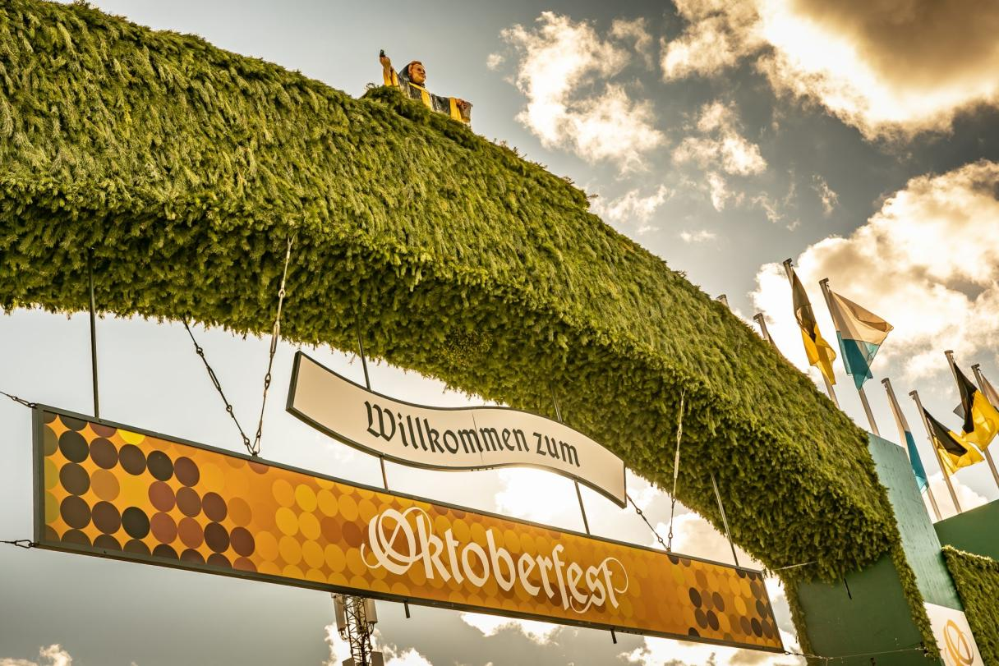

The Oktoberfest is the largest folk festival in the world, a unique synthesis of the arts, a piece of Munich's soul. It is tradition that customs and the Bavarian way of life experience a lively renewal here in particular. The Oktoberfest stands for a sense of home and the hospitality of the people of Munich - a funfair for everyone, with a variety of pleasurable moments for all the senses at the highest level of quality. The brand essence of the Oktoberfest stands for encounters, shared experiences and the joy of life.
